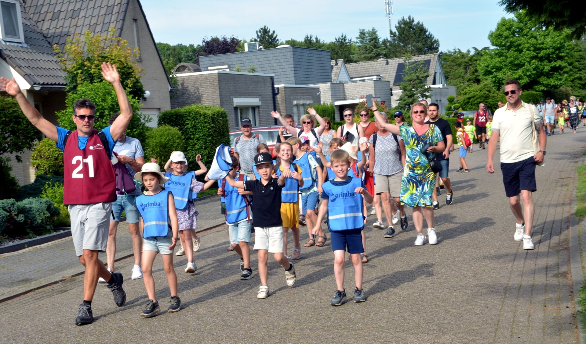

Routes
Bekijk de afstanden, starttijden en routekaarten.
Meer bekijken →
DORPENVELD · 3 T/M 6 JUNI 2027
Samen op pad, nieuwe herinneringen maken en genieten van vier bijzondere wandelavonden. Beleef de Avond4daagse met vrienden, familie en buurtgenoten.
Bekijk de afstanden, starttijden en routekaarten.
Meer bekijken →Alles over startlocatie, veiligheid en medailles.
Meer bekijken →Een vraag? Neem contact op met de organisatie.
Meer bekijken →MEERDERE LOCATIES
Iedere locatie heeft haar eigen kleur, logo en lokale partners. Kies een locatie om de lokale editie te bekijken.
3 t/m 6 juni 2027
De Dorpenveld-editie heeft een warme oranje-blauwe uitstraling en een lokale route door het dorp en de omliggende velden.
10 t/m 13 juni 2027
Havenstad draait om een frisse paarse en blauwe uitstraling met een route langs de haven, parken en woonwijken.
17 t/m 20 juni 2027
Buitenwijk combineert groen en groene energie met een route door parken, sportvelden en kindvriendelijke straten.
24 t/m 27 juni 2027
Vallei kiest voor een frisse blauwe uitstraling met een route door het centrum, langs water en over sportieve afstanden.
GEKOZEN LOCATIE
Bekijk de lokale sfeer, partners en foto's van de Dorpenveld-editie. Deze locatie houdt vast aan de bestaande evenementgegevens en voegt een eigen lokale identiteit toe.
Deze partners ondersteunen de Dorpenveld-editie met lokale energie, catering en activiteiten langs de route.
Catering
Activiteiten
Finish
Een voorbeeld van hoe de lokale editie eruit kan zien: warme avondkleuren, lokaal logo en een feestelijke finish.
Dorpsplein met lokale branding en startbord.
Wandelgroepen in de avondzon met lokale borden.
Feestelijke eindzone met lokale partners en medailles.